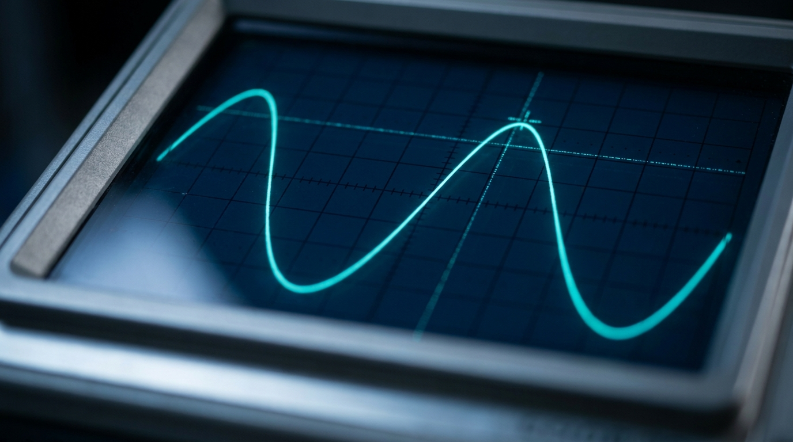
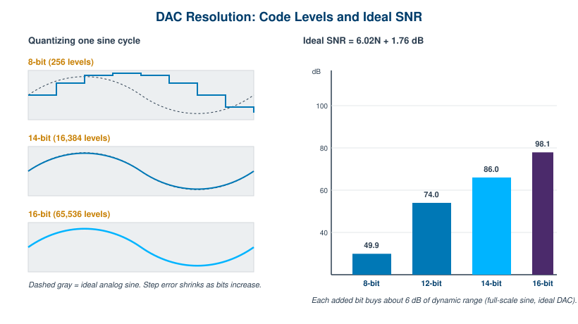
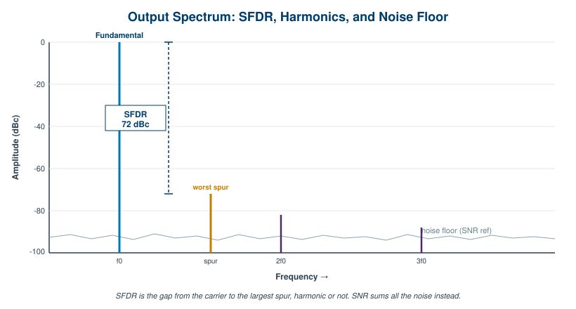

Chapter 3: Key Specifications

Every arbitrary waveform generator is sold on a handful of headline numbers. Sample rate. Resolution. Memory. Bandwidth. Those numbers are real, but they interact, and the interactions are where engineers get surprised. A generator that looks fast on one line can look slow on another, and a spec that wins the data sheet can lose the measurement.
This chapter is a guided tour of the specifications that actually matter, what each one governs, and the quiet tradeoffs that connect them. We will keep it quantitative. By the end you should be able to pick up an AWG datasheet, read past the bold type, and predict how the instrument will behave at the edge of your signal. The goal is spec literacy, not spec memorization.
3.1 Sample Rate
Sample rate is how many points the generator emits per second, measured in samples per second (Sa/s), or more usefully for modern instruments in MSa/s and GSa/s. It is the clock that drives the digital-to-analog converter. Each tick, one stored sample becomes one analog voltage. Everything else about fidelity flows downstream from this rate.
The sample rate sets a hard ceiling on the highest frequency the generator can represent. The Nyquist criterion says you need more than two samples per cycle of the highest frequency component, so the theoretical maximum output frequency is half the sample rate. A 1.25 GSa/s generator can in principle place energy up to 625 MHz. We say "in principle" because the practical limit sits well below Nyquist once you account for reconstruction filtering and the amplitude roll-off near the band edge. We will treat Nyquist properly in Chapter 4; for now, read sample rate as the frequency budget you are buying.
Two numbers often hide behind one headline. The update rate is the true rate at which fresh, independent samples leave memory and reach the DAC. The interpolated or effective rate is a higher number a generator may report after on-chip interpolation, which manufactures intermediate samples to ease the reconstruction filter. Interpolation is genuinely useful, since it pushes the first image further out and relaxes the analog filter, but it does not create information that was not in the original waveform. When a datasheet quotes a large sample rate, find out whether that is the memory update rate or an interpolated output rate. For the BNC Model 686, for example, the headline 20 GS/s is a real-time update rate, which is the meaningful version of the number.
Engineer's corner. When two AWGs quote the same sample rate but one costs twice as much, the sample rate is almost never the reason. Look at what surrounds it: the reconstruction filter, the DAC resolution, the spurious performance, and the clock. Those are where the money goes, and where your signal lives or dies.
3.2 Vertical (DAC) Resolution
Vertical resolution is the number of bits in the DAC, and it sets how finely the generator can divide its output voltage range. An N-bit converter has 2N distinct code levels. An 8-bit DAC offers 256 levels. A 14-bit DAC offers 16,384. A 16-bit DAC offers 65,536. More levels means each step is smaller, the staircase that approximates your waveform is finer, and the quantization error that rides on top of the signal is lower.

The payoff shows up as dynamic range. For an ideal converter driven by a full-scale sine wave, the best achievable signal-to-noise ratio is
SNR (dB) = 6.02 N + 1.76
where N is the number of bits. That formula is the reason every added bit is worth about 6 dB. An ideal 8-bit DAC tops out near 50 dB of SNR, a 14-bit part near 86 dB, and a 16-bit part near 98 dB. Real converters never reach the ideal, which is why the honest figure of merit is ENOB, the effective number of bits. ENOB folds in real noise and distortion by running the measured SNR-and-distortion back through the same formula: ENOB = (SINAD minus 1.76) / 6.02. A converter advertised at 14 bits might deliver 11 to 12 effective bits at high output frequency. Always ask for ENOB at a stated frequency, not just the nameplate bit count.
Here is the tradeoff that shapes the whole market. Resolution and speed pull against each other in silicon. The fastest DAC architectures, which reach the multi-GSa/s rates, are often 8 to 14 bits because pushing more bits at those speeds is hard and power-hungry. Slower converters can comfortably reach 16 bits. This is why a 6 GSa/s instrument may be 16-bit while a 20 GSa/s instrument is 14-bit, as with the BNC Model 685 (16-bit, 6.16 GS/s) and Model 686 (14-bit, 20 GS/s). Neither is "better" in the abstract. One favors amplitude precision, the other favors raw speed and bandwidth. The right choice depends on whether your signal is amplitude-limited or frequency-limited.
3.3 Memory Depth
Memory depth is how many waveform points the generator can store per channel, quoted in samples (often as 256K, 4 GSamples, and so on). It is the length of the script the DAC reads. And it sets a simple, unforgiving limit: the longest unique waveform you can play before the pattern must repeat or be refilled.
The governing relation is one line of arithmetic:
playback time = memory depth / sample rate
The tension is immediate. Memory depth wants to be large; sample rate wants to be large; and they divide. At 20 GSa/s, one million points lasts only 50 microseconds. To hold a full millisecond of unique signal at that rate you need 20 million points. This is why deep memory and high sample rate are both expensive, and why generators built for long or complex scenarios advertise memory in the gigasample range. The BNC Model 686 carries up to 9 GSamples per channel for exactly this reason.
Deep memory matters most in three situations. Long records: a radar pulse train, a communications frame, or a captured real-world signal replayed for hardware-in-the-loop testing. Low-frequency content: a slow envelope or a long bit sequence needs many points even at a modest rate, because the record has to span the whole period. Complex, non-repeating waveforms: anything that cannot be looped without an audible or measurable seam.
When you cannot afford enough memory to hold the whole signal, two techniques buy you out. Segmentation and sequencing break the waveform into reusable blocks and stitch them with loops, jumps, and conditional branches, so a short bit of memory plays a long, structured scenario. Streaming feeds samples from the host or a large external store in real time, trading memory depth for sustained bus bandwidth. Both are covered in depth in Chapter 5; the point here is that memory depth is not the only way to get length, but it is the simplest and the most deterministic.
Pro tip. Before you pay for the deepest memory option, do the division. Multiply your required record length by your sample rate. If the answer fits in a smaller, cheaper memory plus a sequencer, you may not need the giant buffer at all. Memory you never fill is margin you overpaid for.
3.4 Analog Bandwidth and Rise Time
Analog bandwidth is the frequency range the generator's output stage can actually pass, measured at the connector after the DAC, the reconstruction filter, and the output amplifier. It is a separate number from sample rate, and it is usually the one that limits your fastest edges. A generator can clock at 20 GSa/s and still roll its output off at, say, 10 GHz, because the analog chain has its own frequency response independent of the digital clock.
Bandwidth and edge speed are two views of the same physics. The standard first-order rule of thumb ties them together:
rise time ≈ 0.35 / bandwidth
A 1 GHz output bandwidth corresponds to roughly a 350 ps rise time. A system with a 50 ps rise time, like the BNC Model 686, implies bandwidth in the multi-GHz range, which is why that instrument quotes 10 GHz bandwidth alongside its 50 ps rise and fall times. The constant 0.35 assumes a single-pole Gaussian-like response; sharper filters shift it slightly, but it is close enough for budgeting and sanity checks.
The practical lesson is headroom. A clean edge contains energy at frequencies far above its fundamental repetition rate, because the harmonics that square up the corners live high in the spectrum. If you want a crisp 100 MHz square wave, you need bandwidth to pass its fifth, seventh, and ninth harmonics, not just the 100 MHz fundamental. Generate a signal whose required edges sit near the instrument's bandwidth limit and you will get rounded corners, overshoot, or ringing, not because the AWG is broken but because you asked the output stage for detail it cannot deliver. Always leave bandwidth headroom above your fastest edge.
3.5 Spectral Purity: SFDR, SNR, and Phase Noise
Resolution tells you how clean a signal could be in theory. Spectral purity tells you how clean it is in practice. Three numbers carry most of the weight here, and they are easy to confuse because they all live in the frequency domain.

SFDR, spurious-free dynamic range, is the amplitude gap between the fundamental and the largest single unwanted spectral line, expressed in dBc (decibels relative to the carrier). A 72 dBc SFDR means the worst spur sits 72 dB below your tone. That spur might be a harmonic of the signal, or it might be a non-harmonic artifact from DAC nonlinearity, clock feedthrough, or interpolation images. SFDR is the spec to watch when you are generating a small signal that must not be masked by the generator's own junk, or testing a receiver that has to ignore everything except the wanted tone.
SNR, signal-to-noise ratio, compares the signal power to the total integrated noise across the band, excluding the discrete harmonics. Where SFDR cares about the single worst offender, SNR cares about the whole noise carpet. Harmonic and spurious content is the rest of the picture: harmonics are spurs at integer multiples of the fundamental, generated by nonlinearity in the DAC and output stage, while non-harmonic spurs come from clock coupling, power-supply tones, and digital crosstalk. A good datasheet separates these so you know whether a problem is distortion you can sometimes filter or noise you cannot.
Phase noise is the purity of the sample clock itself, and it propagates straight into your output. The clock's short-term frequency instability smears every generated tone, raising a noise skirt around it. The penalty grows with output frequency, because a fixed timing uncertainty is a larger fraction of a shorter period. A generator with a noisy clock cannot produce a clean high-frequency carrier no matter how many bits its DAC has. For anything involving frequency accuracy, modulation quality, or close-in spectral measurements, the clock's phase noise is as important as the converter.
3.6 Jitter and Timing Stability
Jitter is the uncertainty in when each sample actually comes out, the time-domain twin of phase noise. Every DAC update is supposed to land on a perfectly even clock grid. In reality each edge arrives a little early or a little late, and that timing error turns into amplitude error on any part of the waveform that is moving quickly.
This is the mechanism that quietly erodes effective resolution at high frequencies. On a fast-slewing edge, a small timing error samples the wrong voltage, and the faster the signal moves the larger that voltage error becomes. So jitter caps your usable resolution: it does no harm to a slow signal, but it can pull a nominally 14-bit output down to far fewer effective bits when you push toward the top of the band. This is one reason ENOB falls off with frequency. You can have all the DAC bits in the world and still be timing-limited.
Jitter comes in two flavors that behave differently. Random jitter is Gaussian, unbounded, and arises from thermal and shot noise in the oscillator and clock path; it is described statistically and never fully goes away. Deterministic jitter is bounded and has a cause you can often name: power-supply coupling, crosstalk, duty-cycle distortion, or data-dependent effects. Deterministic jitter can frequently be designed out or filtered; random jitter sets the noise floor you are stuck with. Total jitter is the convolution of the two, and it is what shows up at your output.
Reference inputs are the lever you have over all of this at the system level. A rear-panel 10 MHz reference input lets the generator lock its internal clock to a high-stability external source, an oven-controlled or rubidium standard, so that frequency accuracy and long-term drift are governed by a reference you trust. Reference inputs also let you discipline several instruments to a common timebase, which is the foundation of multi-channel and multi-box synchronization covered in Chapter 7. They do not fix close-in random jitter, but they anchor accuracy and let a clean external clock improve a system that would otherwise be limited by an ordinary internal oscillator.
Putting It Together: A Spec Reference Table
The specifications above are not a checklist to maximize line by line. They are a system, and the art is reading them against your actual signal. The table below summarizes what each governs and the trap that most often catches engineers who read only the headline.
| Specification | What it governs | Watch out for |
|---|---|---|
| Sample rate (Sa/s) | Highest representable frequency; sets the Nyquist ceiling at half the rate | Is the headline a true update rate or an interpolated rate? Usable bandwidth sits well below Nyquist. |
| Vertical resolution (bits) | Code levels (2N), step size, and ideal SNR of 6.02N + 1.76 dB | Nameplate bits are not ENOB. The fastest DACs trade bits for speed; ask for ENOB at frequency. |
| Memory depth (Sa) | Longest unique waveform; playback time = depth / sample rate | At high sample rates, deep memory drains fast. Sequencing or streaming may beat raw depth. |
| Analog bandwidth (Hz) | Frequency range the output stage passes; rise time ≈ 0.35 / BW | Independent of sample rate. Fast edges need bandwidth headroom for their high harmonics. |
| SFDR (dBc) | Gap from carrier to the single worst spur | Worst spur may be non-harmonic. Critical for small-signal and receiver-test work. |
| SNR / ENOB | Signal versus total integrated noise; real-world effective bits | Degrades with output frequency. A static-frequency figure can flatter the part. |
| Phase noise / jitter | Clock purity and timing stability; close-in spectral quality | Penalty scales with output frequency. Caps effective resolution on fast edges regardless of DAC bits. |
Read the datasheet as a whole. A 14-bit generator with excellent jitter and SFDR can outperform a 16-bit generator with a noisy clock on a high-frequency signal, even though the bit count says otherwise. Match the instrument to the part of the signal that actually constrains you, and confirm every number against the current BNC datasheet at berkeleynucleonics.com before you design it in.
Check Your Understanding
Five quick questions on this chapter. Your answers save on this device.